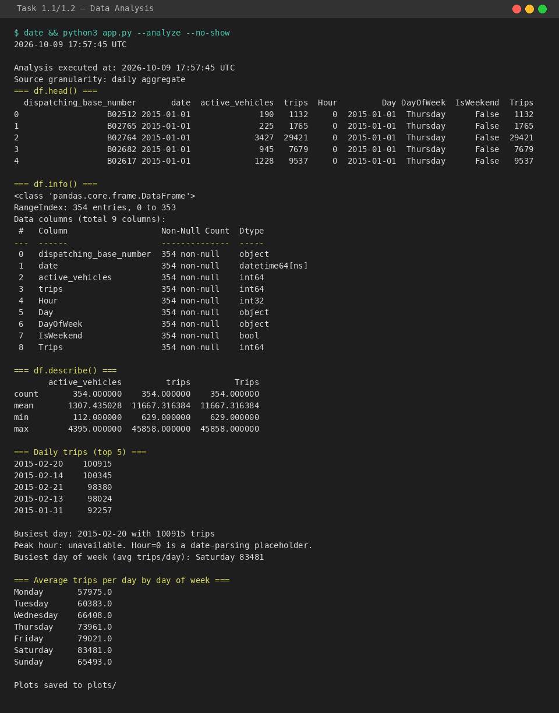
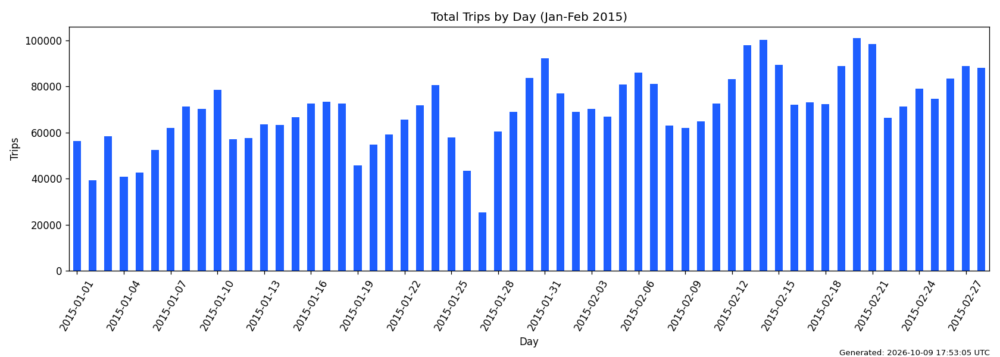
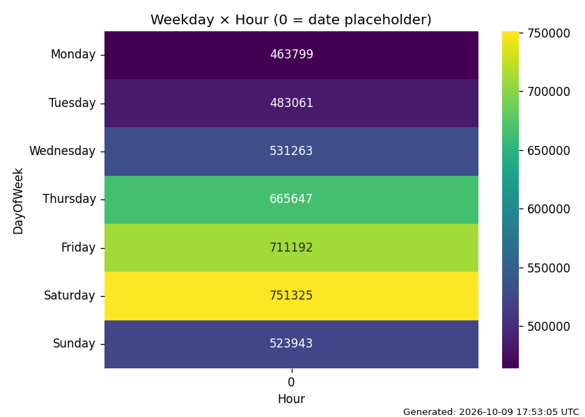
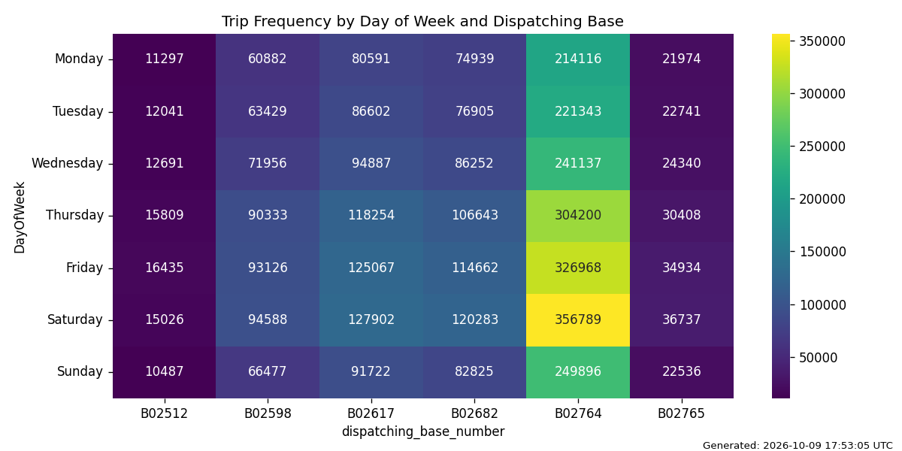
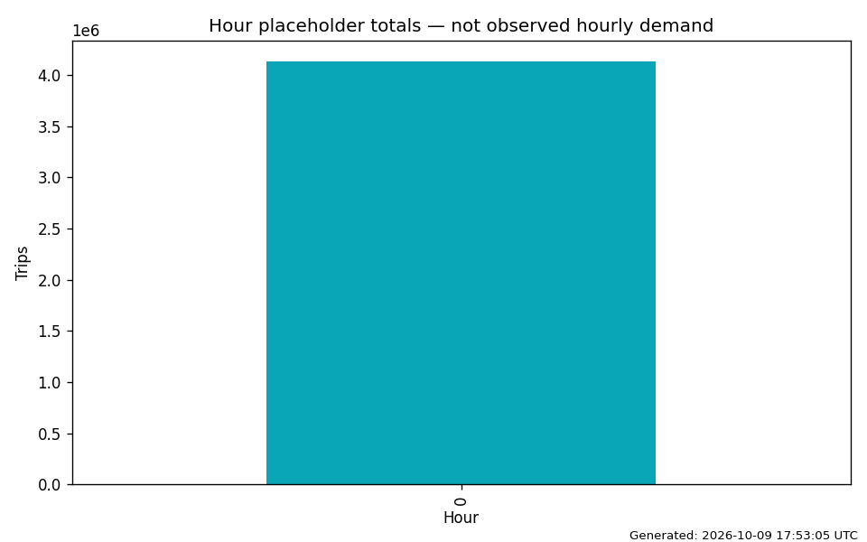
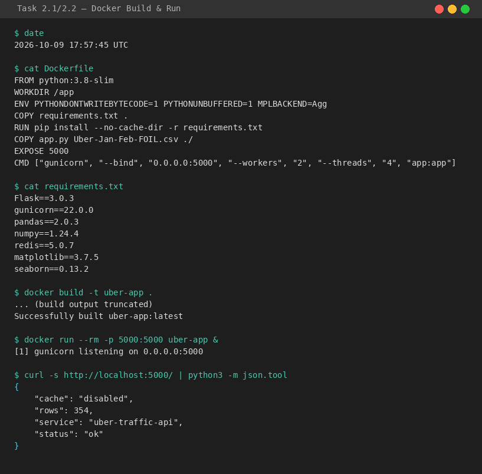
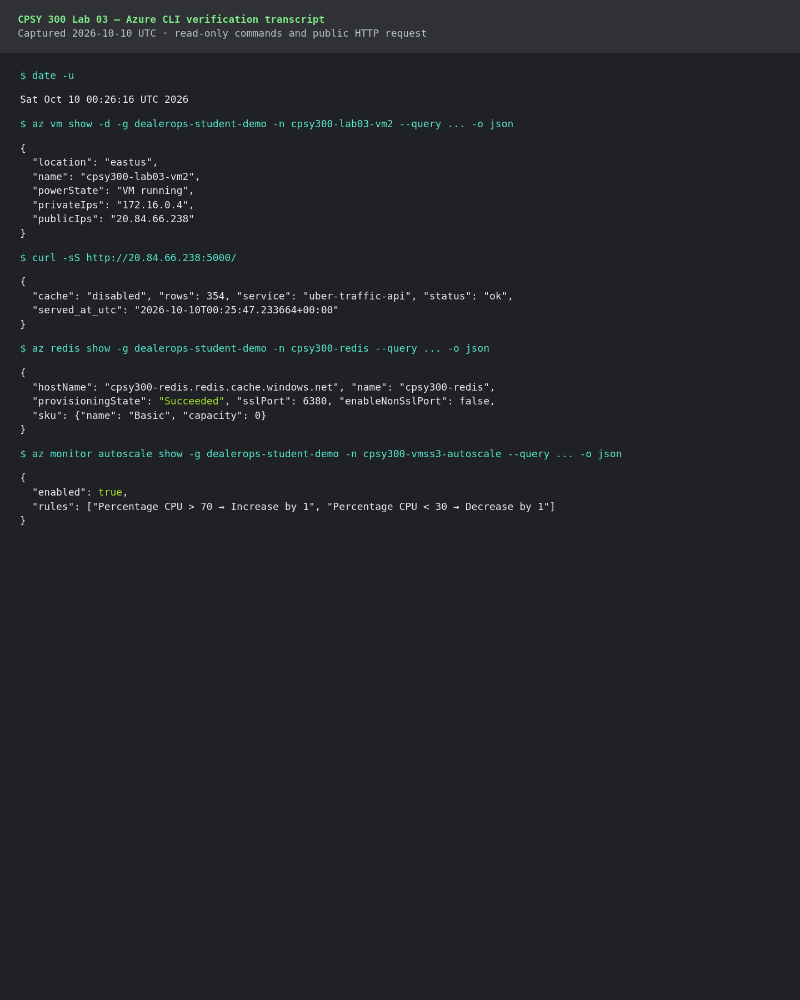
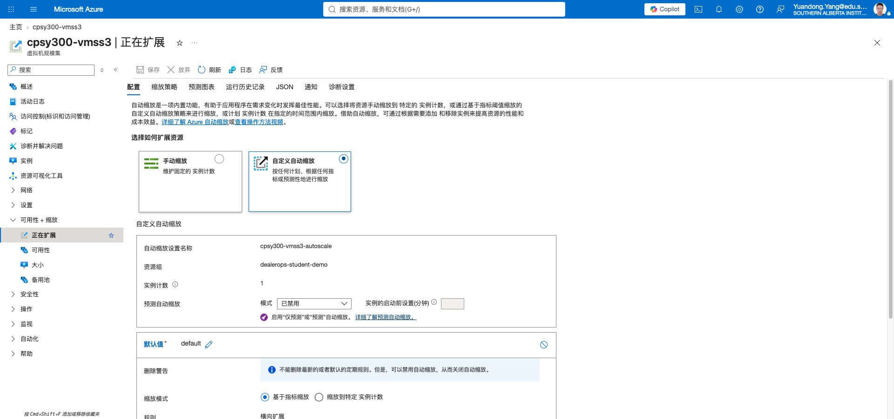
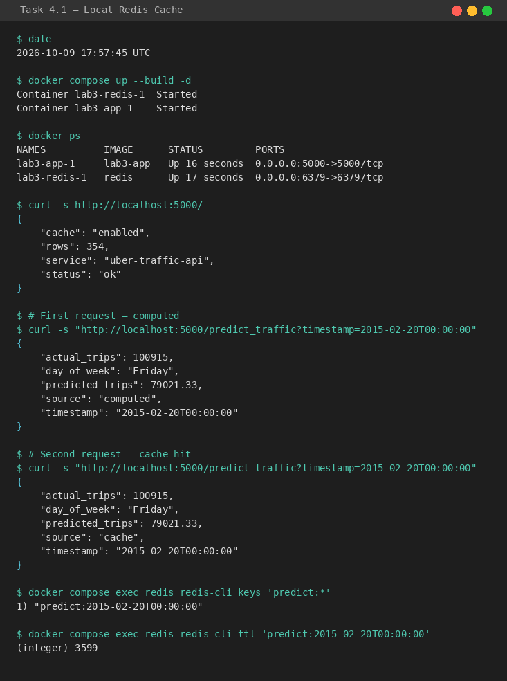
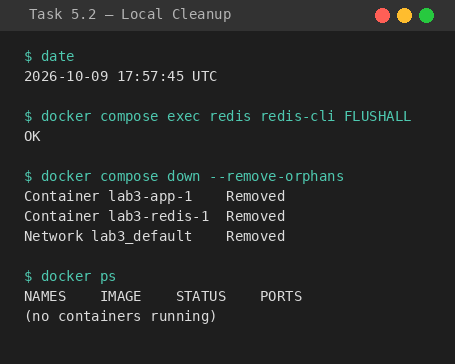

CPSY 300 Lab 03
This report documents the complete Lab 03 workflow: data preprocessing and visualization, JMeter performance testing, Docker containerization, Azure VM/VMSS deployment, Redis caching, and performance monitoring. The official CSV is aggregated by date and dispatching base (columns: dispatching_base_number, date, active_vehicles, trips), so trips is used as the weight instead of treating each row as one trip.
Environment
| Component | Detail |
|---|---|
| Local OS | Ubuntu 22.04 LTS (x86_64) |
| Python | 3.8-slim (Docker) / 3.10.12 (host) |
| Docker | 29.8.0 |
| Azure VM | cpsy300-lab03-vm2, Standard D2s v3, East US Zone 2, Ubuntu 24.04 |
| Azure Redis | cpsy300-redis, Basic C0, East US, port 6380 (SSL) |
Executive Summary
Task 1 — Data Preprocessing and Traffic Analysis · 10 marks
1.1 Data Cleaning and Feature Extraction · 5 marks
The input CSV contains 354 rows with four fields. The application removes missing values and duplicate records, parses the date column, and creates derived features: Hour, Day, DayOfWeek, IsWeekend, and Trips (weighted by the trips column).
python3 app.py --analyze
Shows df.head(), df.info(), df.describe(), top 5 busiest days, and day-of-week averages. Executed with date command for timestamp verification.

1.2 Aggregation and Visualization · 5 marks
| Metric | Result | Interpretation |
|---|---|---|
| Rows after cleaning | 354 | No missing or duplicate rows in the aggregate file |
| Total weighted trips | 4,130,230 | Sum of the trips field, not row count |
| Busiest day | 2015-02-20 · 100,915 | All dispatching bases aggregated by day |
| Largest base | B02764 · 1,914,449 | All dates aggregated by base |
| Busiest day of week | Saturday · avg 83,481/day | Weekend demand peaks; Monday lowest at 57,975 |
The official CSV is aggregated at the day level, so the Hour column is always 0 (a date-parsing artifact, not an observed pickup hour). The hourly bar chart is labeled accordingly. The day-of-week × hour heatmap collapses to a single column; a supplementary day-of-week × base heatmap provides richer information for this dataset.




1.3 JMeter Traffic Simulation · 5 marks
jmeter_test_plan.jmx includes a Thread Group (500 users, 60-second ramp-up, 5 loops), a CSV Data Set Config reading Uber-Jan-Feb-FOIL.csv, an HTTP GET sampler targeting /predict_traffic?timestamp=${timestamp}, a Summary Report, and a View Results Tree. The CSV uses date as the timestamp variable.
2,500 samples completed with 0 errors, 2.04 ms average response time, and 42.15 transactions/s.

Task 2 — Docker Containerization · 10 marks
2.1 Dockerfile · 5 marks
Uses python:3.8-slim as required by the handout, with pinned dependencies, gunicorn for production serving, and port 5000 exposed.
requirements.txt:
2.2 Build and Run · 5 marks

Task 3 — Azure VM and VMSS Deployment · 10 marks
3.1 Azure VM Deployment · 5 marks
An Ubuntu 24.04 VM (cpsy300-lab03-vm2, Standard D2s v3) was created in East US Zone 2. The NSG rule Allow-5000 (priority 310, TCP, port 5000) allows inbound traffic. Azure CLI and an external request verified that the VM was running and that its public API returned HTTP 200 on 2026-10-10 UTC; see evidence/azure-cli-verification-2026-10-10.md.


ok.
3.2 VMSS Autoscaling · 5 marks
A VM Scale Set (cpsy300-vmss3) and its load balancer were provisioned. Azure CLI verified one running flexible-scale-set VM and enabled autoscale rules: CPU above 70% scales out by 1 instance; CPU below 30% scales in by 1 instance; capacity range 1–3. No activity-log scale event has yet been captured, so a JMeter-driven scale demonstration remains required.



Task 4 — Redis Caching · 10 marks
4.1 Local Redis · 5 marks
docker-compose.yml starts Redis and the API on one Docker network. The API uses the request timestamp as the cache key (predict:<timestamp>) with a default TTL of 3600 seconds. The first request computes the result; the second returns the cached result with "source": "cache".
The prediction model returns the historical mean daily trips for the same day of week. For Friday 2015-02-20, the predicted value is 79,021.33 trips (the average of all Fridays in the dataset), while the actual observed total was 100,915 trips.

4.2 Azure Cache for Redis · 5 marks
An Azure Cache for Redis instance (cpsy300-redis, Basic C0, SSL port 6380) was provisioned successfully, as verified by Azure CLI on 2026-10-10. The application must be restarted with the following environment variables before an Azure-cache hit can be claimed. The currently deployed VM API still reports cache: disabled; see evidence/azure-cli-verification-2026-10-10.md.
The redis.env file (permissions 600) contains:
The application connects using redis.Redis(host, port=6380, password, ssl=True) as specified in the handout.

The CLI transcript above confirms the resource subsequently reached Succeeded, uses SSL port 6380, and has the non-SSL port disabled. It also accurately records that the current VM application cache is disabled; an Azure cache-hit screenshot requires a container restart with its Redis credentials.
Task 5 — Monitoring and Cleanup · 10 marks
5.1 Performance Comparison · 5 marks
Compare average response time, CPU usage, and autoscale actions before and after caching, using the same time window in Azure Monitor. JMeter throughput and error percentage serve as supporting evidence.
| Metric | Before caching | After caching | Notes |
|---|---|---|---|
| Avg response time (JMeter) | To be measured | To be measured | From JMeter Summary Report |
| CPU usage | To be measured | To be measured | From Azure Monitor |
| Scale-out events | To be measured | To be measured | From VMSS activity log |
5.2 Cleanup · 5 marks
Local cleanup:
Azure cleanup (delete resources by name, not the entire resource group, since dealerops-student-demo is shared):

Azure Portal resource-deletion screenshots to be inserted after cleanup.
Submission Checklist
- Report PDF (exported from this HTML)
- app.py — Flask application with prediction and caching
- Dockerfile — Python 3.8-slim with gunicorn
- requirements.txt — all dependencies including matplotlib and seaborn
- docker-compose.yml — app + Redis
- jmeter_test_plan.jmx — JMeter test plan
- Uber-Jan-Feb-FOIL.csv — dataset
- screenshots/ — all evidence with visible date and time
CPSY 300 Lab 03 · October 9, 2026